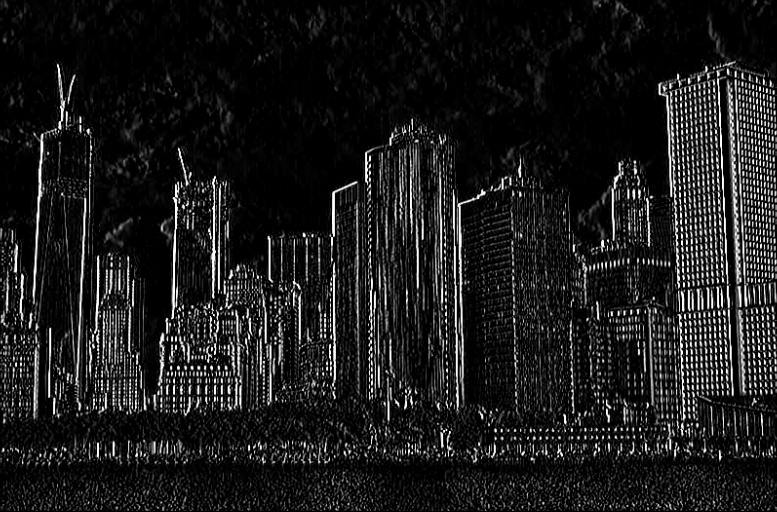
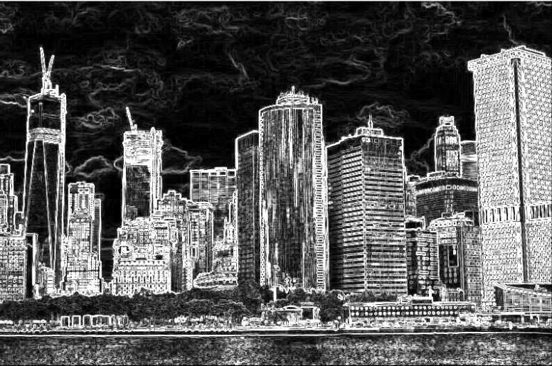

For this project I created a virtual reality game for Oculus Rift
using Unity. While creating the game, I explored the fundamentals
of virtual and augmented reality, including research about game
design practices, light and optics, the mathematics of physics and
motion, methods for tracking in XR, and human perception.
Computer Vision
Using Python, I programmed Gaussian Blur, Gaussian Derivative, and
Sobel Filters. I avoided using pre-made functions in libraries;
instead, the program implemented code based on traditional
algorithms for each filter.
The original image before filters were applied
Gaussian filter applied using a 3x3 matrix
Gaussian filter applied using a 5x5 matrix
Derivative of the Gaussian filter applied using a gx
matrix
Derivative of the Gaussian filter applied using a gy
matrix
Sobel filter
The original image before filters were applied
Gaussian filter applied using a 3x3 matrix
Gaussian filter applied using a 5x5 matrix

Derivative of the Gaussian filter applied using a gx
matrix
Derivative of the Gaussian filter applied using a gy
matrix

Sobel filter
Coursework
Web Development
Developed skills using HTML, CSS, and JavaScript to build a CV
website
Discussed functional JavaScript, Bootstrap, JQuery, and Ajax
Practiced implementing best practices in code for web
accessibility
Algorithms and Complexity
Researched techniques for the design and analysis of algorithms
Conducted case studies of existing algorithms and commpared
results with theorized time complexity
Calculated the efficiency of programs between operative systems
Computer Systems Programming
Studied machine organization, linking and loading, dynamic
memory allocation techniques, systems calls, and other
machine-level processes
Programmed in C and assembly language to implement procedure
calls and complex data types at a machine level
Practiced hacking in a remove environment to gauge the
vulnerability of systems